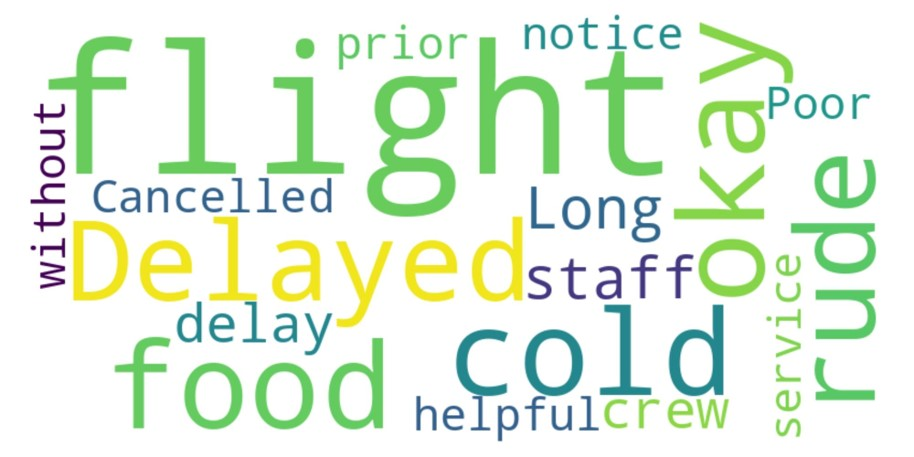
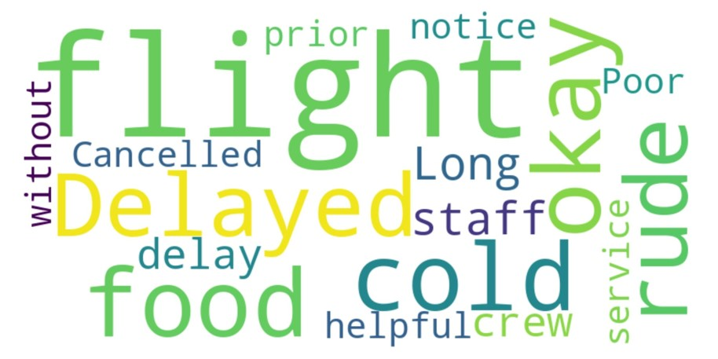

How I Helped British Airways Listen to the Voice of the Customer
In B2C fintech and SaaS environments, real user feedback can make or break product success. This NLP-driven project dives into thousands of British Airways reviews, uncovering emotional cues and behavioral signals — powering smarter CX and retention strategies.
 

Business Impact
Unstructured Feedback
Just like airline reviews, FinTech & SaaS platforms receive massive feedback across help desks, app stores, and social media—largely unstructured.
Signal vs Noise
Customers often repeat the same frustrations. This project uses topic modeling and sentiment to group these pain points—mirroring issue triage in FinTech apps.
Actionable Intelligence
Insights generated here can inform real-time personalization, prioritization of features, and automation of ticket routing in SaaS support workflows.
My Role: NLP-Powered Customer Whisperer
Scraping the Raw Voice
Built a BeautifulSoup scraper pipeline to extract live reviews—this mirrors the setup for collecting open-text customer input in FinTech apps.
Preprocessing for Clarity
Used Pandas & Regex to clean messy real-world data (emojis, casing, spelling)—a critical first step in analyzing user feedback at scale.
Sentiment Scoring
Used TextBlob to assign polarity (-1 to +1). This mirrors how SaaS companies infer user happiness beyond stars or emojis.
Theme Detection
Used LDA topic modeling to extract recurring complaints & praises—ideal for roadmap planning and NPS follow-up strategies.
Features That Drive Business Results
Emotion Scoring
Each review is scored on a sentiment scale, making emotion quantifiable and actionable
Theme Clustering
LDA groups feedback into clear themes, helping teams prioritize improvements—just like backlog grooming in SaaS development.
Visual Insight Dashboards
Word clouds and charts turn raw text into compelling visuals — ideal for stakeholder presentations or CX dashboards.
Tools I Used
Python
Core language for scraping and cleaning feedback data.
BeautifulSoup
Scraped customer reviews from online sources.
Pandas
Cleaned and structured data for analysis.
Regex
Refined text data by removing noise and irrelevant characters.
TextBlob
Extracted sentiment polarity and subjectivity.
LDA (Gensim)
Discovered key themes within the dataset.
Matplotlib
Created trend and distribution charts.
WordCloud
Visualized the most common terms for easy interpretation.